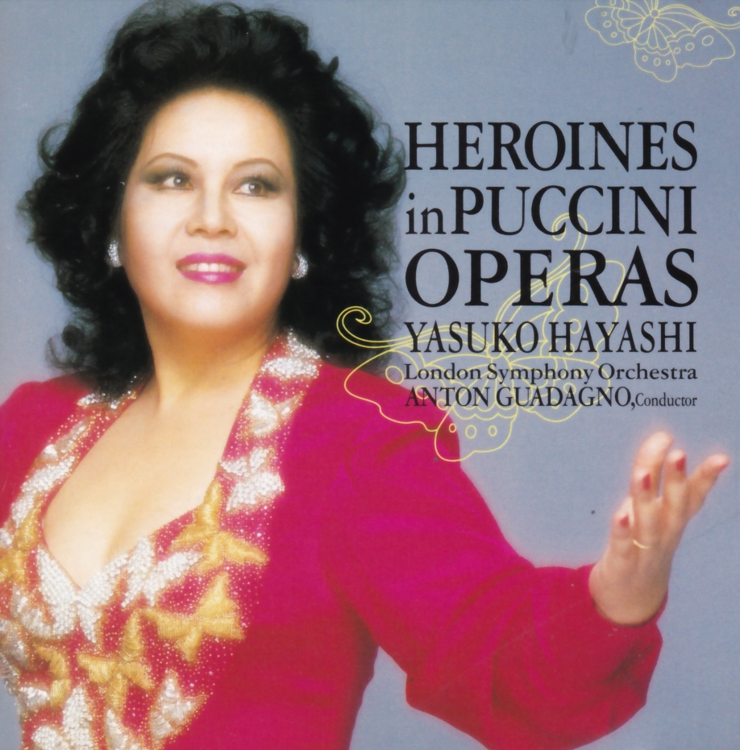

林 康子（はやし やすこ）
高松高校 昭和37年卒
プロフィール

東京芸大オペラ研究科修了。柴田睦陸氏に師事。
1968年 日伊コンコルソ第１位。イタリア政府の奨学生として、ミラノに留学。ヴェルディ音楽院、スカラ座付属オペラ科で研鑽を積む。
1971年 ピッコラ・スカラ座で、モーツアルトり「恋の花つくり」でデビュー。
1972年 日本人として初めて、スカラ座に「蝶々夫人」でデビュー。同年、イタリア放送主催のロッシーニー生誕180年記念コンクールに優勝。ヨーロッパ・オペラ界注目の存在となる。
その後、一流歌劇場で主役を演じ、活躍を続ける。
1981年 イタリア政府から「金の射手座賞」を受賞。
1982年 藤原歌劇団公演「アンナ・ボレーナ」のタイトル・ロールで大成功を収め、毎日芸術賞、ウィンナーワルド・オペラ大賞（現ジロー・オペラ大賞）を受賞。
1984年の「マリア・ストゥアルダ」でも絶賛を博し、日本オペラ界に衝撃を与えた。
藤原歌劇団で、1985年「マノン・レスコー」、1987年「イル・トロヴァトーレ」、1988年「蝶々夫人」に出演し大好評を得、サントリー音楽賞を受賞。
その他数々の賞を受賞し、名実ともに、超一流歌手として認められている。
（「オペラ・フォト・グラフィック 林康子」ＴＢＳ出版より）
2006年 紫綬褒章を受章。